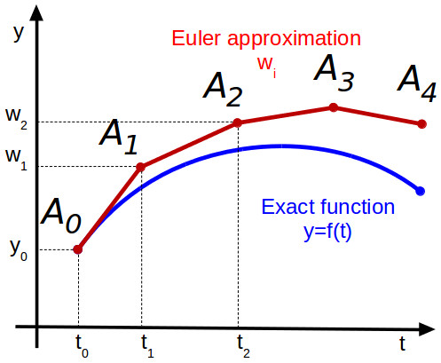

Lab 12 - Differential Equations
In this lab you will implement a simple solver for ordinary differential equations (ODE) as well as a less verbose version of the GaussNums that were introduced in the lecture.
Euler ODE Solver
In this first part you will implement your own, simple, ODE framwork (feel free to make it a package;) in which you can easily specify different ODE solvers. The API is heavily inspired by DifferentialEquations.jl, so if you ever need to use it, you will already have a feeling for how it works.
Like in the lecture, we want to be able to specify an ODE like below.
function lotkavolterra(x,θ)
α, β, γ, δ = θ
x₁, x₂ = x
dx₁ = α*x₁ - β*x₁*x₂
dx₂ = δ*x₁*x₂ - γ*x₂
[dx₁, dx₂]
endIn the lecture we then solved it with a solve function that received all necessary arguments to fully specify how the ODE should be solved. The number of necessary arguments to solve can quickly become very large, so we will introduce a new API for solve which will always take only two arguments: solve(::ODEProblem, ::ODESolver). The solve function will only do some book-keeping and call the solver until the ODE is solved for the full tspan.
The ODEProblem will contain all necessary parameters to fully specify the ODE that should be solved. In our case that is the function f that defines the ODE itself, initial conditions u0, ODE parameters θ, and the time domain of the ODE tspan:
struct ODEProblem{F,T<:Tuple{Number,Number},U<:AbstractVector,P<:AbstractVector}
f::F
tspan::T
u0::U
θ::P
endThe solvers will all be subtyping the abstract type ODESolver. The Euler solver from the lecture will need one field dt which specifies its time step:
abstract type ODESolver end
struct Euler{T} <: ODESolver
dt::T
endOverload the call-method of Euler
(solver::Euler)(prob::ODEProblem, u, t)such that calling the solver with an ODEProblem will perform one step of the Euler solver and return updated ODE varialbes u1 and the corresponding timestep t1.
Solution:
function (solver::Euler)(prob::ODEProblem, u, t)
f, θ, dt = prob.f, prob.θ, solver.dt
(u + dt*f(u,θ), t+dt)
end# define ODEProblem
θ = [0.1,0.2,0.3,0.2]
u0 = [1.0,1.0]
tspan = (0.,100.)
prob = ODEProblem(lotkavolterra,tspan,u0,θ)
# run one solver step
solver = Euler(0.2)
(u1,t1) = solver(prob,u0,0.)([0.98, 0.98], 0.2)Implement the function solve(::ODEProblem,::ODESolver) which calls the solver as many times as are necessary to solve the ODE for the full time domain. solve should return a vector of timesteps and a corresponding matrix of variables.
Solution:
function solve(prob::ODEProblem, solver::ODESolver)
t = prob.tspan[1]; u = prob.u0
us = [u]; ts = [t]
while t < prob.tspan[2]
(u,t) = solver(prob, u, t)
push!(us,u)
push!(ts,t)
end
ts, reduce(hcat,us)
endYou can load the true solution and compare it in a plot like below. The file that contains the correct solution is located here: lotkadata.jld2.
using JLD2
using Plots
true_data = load("lotkadata.jld2")
p1 = plot(true_data["t"], true_data["u"][1,:], lw=4, ls=:dash, alpha=0.7, color=:gray, label="x Truth")
plot!(p1, true_data["t"], true_data["u"][2,:], lw=4, ls=:dash, alpha=0.7, color=:gray, label="y Truth")
(t,X) = solve(prob, Euler(0.2))
plot!(p1,t,X[1,:], color=1, lw=3, alpha=0.8, label="x Euler")
plot!(p1,t,X[2,:], color=2, lw=3, alpha=0.8, label="y Euler")
As you can see in the plot above, the Euler method quickly becomes quite inaccurate because we make a step in the direction of the tangent which inevitably leads us away from the perfect solution as shown in the plot below. 
In the homework you will implement a Runge-Kutta solver to get a much better accuracy with the same step size.
Automating GaussNums
Next you will implement your own uncertainty propagation. In the lecture you have already seen the new number type that we need for this:
struct GaussNum{T<:Real} <: Real
μ::T
σ::T
endOverload the ± (type: \pm<tab>) symbol to define GaussNums like this: 2.0 ± 1.0. Additionally, overload the show function such that GaussNums are printed with the ± as well.
Solution:
±(x,y) = GaussNum(x,y)
Base.show(io::IO, x::GaussNum) = print(io, "$(x.μ) ± $(x.σ)")Recall, that for a function $f(\bm x)$ with $N$ inputs, the uncertainty $\sigma_f$ is defined by
\[\sigma_f = \sqrt{\sum_{i=1}^N \left( \frac{df}{dx_i}\sigma_i \right)^2}\]
To make GaussNums work for arithmetic operations we could manually implement all desired functions as we started doing in the lecture. With the autodiff package Zygote we can automate the generation of these functions. In the next two exercises you will implement a macro @register that takes a function and defines the corresponding uncertainty propagation rule according to the equation above.
Implement a helper function uncertain(f, args::GaussNum...) which takes a function f and its args and returns the resulting GaussNum with an uncertainty defined by the equation above.
Hint: You can compute the gradient of a function with Zygote, for example:
julia> using Zygote;julia> f(x,y) = x*y;julia> Zygote.gradient(f, 2., 3.)(3.0, 2.0)
Solution:
function uncertain(f, args::GaussNum...)
μs = (x.μ for x in args)
dfs = Zygote.gradient(f, μs...)
σ² = mapreduce(+, zip(dfs,args)) do (df,x)
(df * x.σ)^2
end
GaussNum(f(μs...), sqrt(σ²))
endNow you can propagate uncertainties through any function like this:
julia> x1 = 2.0 ± 2.02.0 ± 2.0julia> x2 = 2.0 ± 2.02.0 ± 2.0julia> uncertain(*, x1, x2)4.0 ± 5.656854249492381
You can verify the correctness of your implementation by comparing to the manual implementation from the lecture.
For convenience, implement the macro @register which will define the uncertainty propagation rule for a given function. E.g. for the function * the macro should generate code like below
Base.:*(args::GaussNum...) = uncertain(*, args...)Hint: If you run into trouble with module names of functions you can make use of
julia> getmodule(f) = first(methods(f)).modulegetmodule (generic function with 1 method)julia> getmodule(*)Base
Solution:
function _register(func::Symbol)
mod = getmodule(eval(func))
:($(mod).$(func)(args::GaussNum...) = uncertain($func, args...))
end
function _register(funcs::Expr)
Expr(:block, map(_register, funcs.args)...)
end
macro register(funcs)
_register(funcs)
endLets register some arithmetic functions and see if they work
julia> @register *julia> x1 * x24.0 ± 5.656854249492381julia> @register - +julia> x1 + x24.0 ± 2.8284271247461903julia> x1 - x20.0 ± 2.8284271247461903
To finalize the definition of our new GaussNum we can define conversion and promotion rules such that we do not have to define things like
+(x::GaussNum, y::Real) = ...
+(x::Real, y::GaussNum) = ...Define convert and promote_rules such that you can perform arithmetic operations on GaussNums and other Reals.
Hint: When converting a normal number to a GaussNum you can set the standard deviation to zero.
Solution:
Base.convert(::Type{T}, x::T) where T<:GaussNum = x
Base.convert(::Type{GaussNum{T}}, x::Real) where T = GaussNum(x,zero(T))
Base.promote_rule(::Type{GaussNum{T}}, ::Type{S}) where {T,S} = GaussNum{T}
Base.promote_rule(::Type{GaussNum{T}}, ::Type{GaussNum{T}}) where T = GaussNum{T}You can test if everything works by adding/multiplying floats to GuassNums.
julia> 1.0±1.0 + 2.03.0 ± 1.0julia> [1.0±0.001, 2.0]2-element Vector{Main.GaussNum{Float64}}: 1.0 ± 0.001 2.0 ± 0.0
Propagating Uncertainties through ODEs
With our newly defined GaussNum we can easily propagate uncertainties through our ODE solvers without changing a single line of their code. Try it!
Solution:
θ = [0.1±0.001, 0.2, 0.3, 0.2]
u0 = [1.0±0.1, 1.0±0.1]
tspan = (0.,100.)
dt = 0.1
prob = ODEProblem(lotkavolterra,tspan,u0,θ)
t, X = solve(prob, Euler(0.1))([0.0, 0.1, 0.2, 0.30000000000000004, 0.4, 0.5, 0.6, 0.7, 0.7999999999999999, 0.8999999999999999 … 99.19999999999864, 99.29999999999863, 99.39999999999863, 99.49999999999862, 99.59999999999862, 99.69999999999861, 99.7999999999986, 99.8999999999986, 99.9999999999986, 100.09999999999859], Main.GaussNum{Float64}[1.0 ± 0.1 0.99 ± 0.10004503985705639 … 2.00962692174768 ± 0.21113644544097507 2.0240144792168877 ± 0.21141809631075895; 1.0 ± 0.1 0.99 ± 0.10008496390567367 … 0.14203411803680374 ± 0.2658286647109277 0.1434818062439686 ± 0.2661634685328382])Create a plot that takes a Vector{<:GaussNum} and plots the mean surrounded by the uncertainty.
Solution:
julia> mu(x::GaussNum) = x.μmu (generic function with 1 method)julia> sig(x::GaussNum) = x.σsig (generic function with 1 method)julia> function uncertainplot(t, x::Vector{<:GaussNum}) p = plot( t, mu.(x) .+ sig.(x), xlabel = "x", ylabel = "y", fill = (mu.(x) .- sig.(x), :lightgray, 0.5), linecolor = nothing, primary = false, # no legend entry ) # add the data to the plots plot!(p, t, mu.(X[1,:])) return p enduncertainplot (generic function with 1 method)
uncertainplot(t, X[1,:])
Unfortunately, with this approach, we would have to define things like uncertainplot! and kwargs to the function by hand. To make plotting GaussNums more pleasant we can make use of the @recipe macro from Plots.jl. It allows to define plot recipes for custom types (without having to depend on Plots.jl). Additionally, it makes it easiert to support all the different ways of creating plots (e.g. via plot or plot!, and with support for all keyword args) without having to overload tons of functions manually. If you want to read more about plot recipies in the docs of RecipesBase.jl. An example of a recipe for vectors of GaussNums could look like this:
@recipe function plot(ts::AbstractVector, xs::AbstractVector{<:GaussNum})
# you can set a default value for an attribute with `-->`
# and force an argument with `:=`
μs = [x.μ for x in xs]
σs = [x.σ for x in xs]
@series begin
:seriestype := :path
# ignore series in legend and color cycling
primary := false
linecolor := nothing
fillcolor := :lightgray
fillalpha := 0.5
fillrange := μs .- σs
# ensure no markers are shown for the error band
markershape := :none
# return series data
ts, μs .+ σs
end
ts, μs
end
# now we can easily plot multiple things on to of each other
p1 = plot(t, X[1,:], label="x", lw=3)
plot!(p1, t, X[2,:], label="y", lw=3)